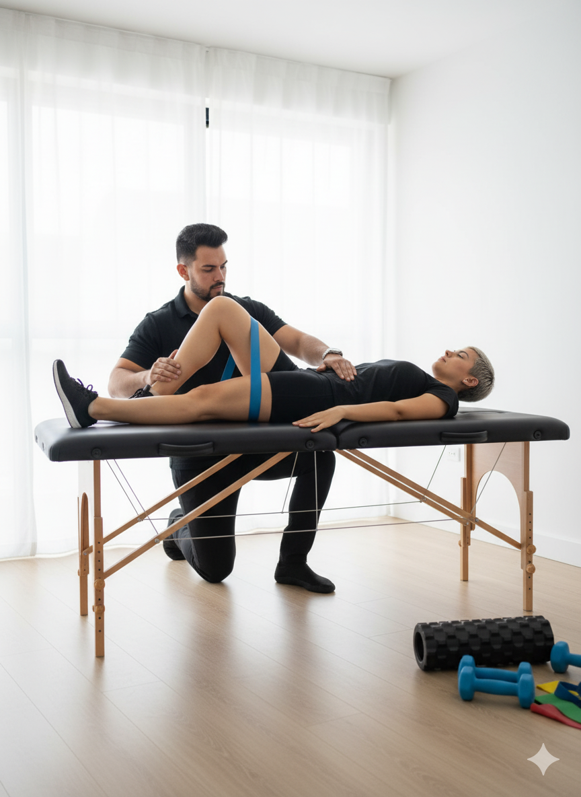
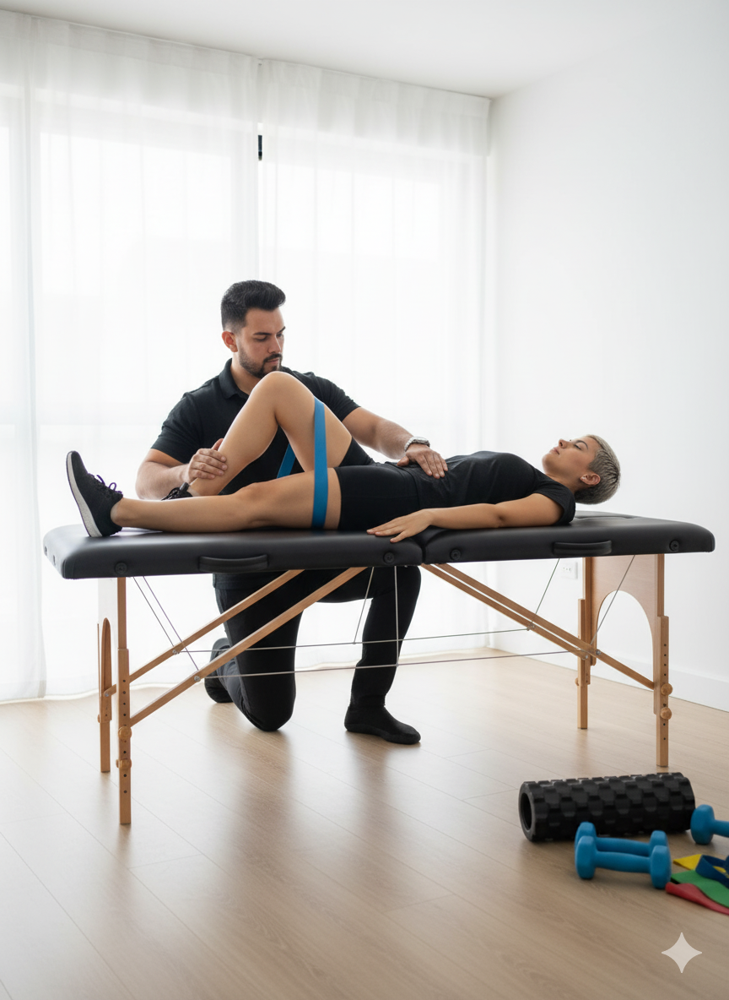

Casos de Éxito: Cuando la Fisioterapia Redefine el Imposible
Historias reales de recuperación que superaron dictámenes médicos negativos.
Galería
 

Historias de Recuperación
César: Recuperación total tras parálisis
César (45 años) ingresó con parálisis completa de miembros inferiores tras un linfoma no Hodgkin que afectó la médula espinal. Pese al dictamen médico, se implementó un proceso intensivo de estimulación nerviosa progresiva. A los 10 meses ya caminaba con caminador, y al finalizar alcanzó un 95% de movilidad total, recuperando su independencia y vida laboral.
Juan Manuel: Reconstrucción funcional
Juan Manuel (8 años) sufrió una caída de doceavo piso con fracturas múltiples. A los 13 años, tras tres años de terapias convencionales sin éxito, inició fisioterapia con Jhon. Durante siete años de trabajo continuo, se logró recuperar un 80% de su movilidad total, permitiéndole caminar, trotar y realizar sus actividades sin ayuda. Hoy lleva una vida normal y activa.